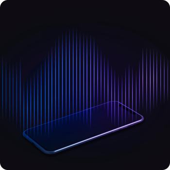
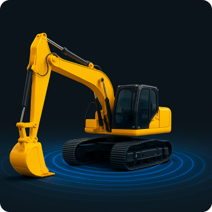
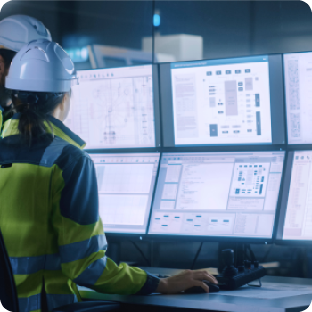
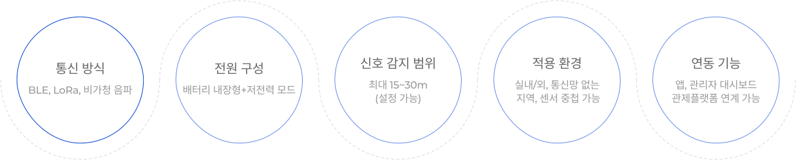

-
회사소개

-
사업분야
-
솔루션
-
연구개발
-
홍보센터
DEVELOPMENT
CEN 핵심 연구과제 소개
새로운 기술과 도전정신으로 미래를 혁신하는 솔루션
굴삭기 전동화를 위한
통합제어기 및 관제SW 개발 자율작업 건설장비 안전관제
시스템 개발 비가청주파수 기반 작업현장
안전관제 시스템 개발 초고속 무선통신 PHY 통합
검증 응용 플랫폼 SW 개발
통합제어기 및 관제SW 개발 자율작업 건설장비 안전관제
시스템 개발 비가청주파수 기반 작업현장
안전관제 시스템 개발 초고속 무선통신 PHY 통합
검증 응용 플랫폼 SW 개발
비가청주파수 기반 작업현장 안전관제 시스템 개발
비가청 영역(초음파 기반)의 사운드 기술을 활용하여 작업자·장비·동물·어린이·위험요소의 출입을 제어하고
사고를 예방하는 CEN의 지능형 공간 안전 솔루션입니다.
비가청 신호는 사람이 인지하지 못하는 방식으로 위치를 식별하고, 지정된 경계선(Geo-fence)을 넘을 경우
자동으로 경보·제어·기록이 이루어집니다.
"소리는 들리지 않지만, 안전은 감지"

스마트폰 SW개발

고정밀 방향 및 거리 탐지 장치 개발

보행자 안전 통합관리 플랫폼 개발
Key Technologies
개발 기술 요소
Specifications

공통 기술 사양
Main target
주요목표
- 작업자용 비가청 리시버 & 지게차 송신기 구성
- 충돌 가능 반경 진입 시 진동+음성+경고등 작동
- 사고이력 기록 및 관리자 대시보드 제공
- 실내/외 혼용 가능한 거리 정밀 측정
Introduction Effect
도입효과
- 중대산업재해 사전 예방
- 작업자 안전지대 확보 및 경각심 고취
- 실시간 위치 기반 이력 관리 가능
Introduction Solution
도입 솔루션
PET용 지오펜스 솔루션
주요 기능
비가청 송수신기 기반 가상 펜스 구성
반려동물 목걸이 연동 소리/진동 경고 제공
GPS 없이도 실내/실외 경계설정 가능
IoT 연계로 주인 스마트폰에 실시간 알림
도입효과
중대산업재해 사전 예방
작업자 안전지대 확보 및 경각심 고취
실시간 위치 기반 이력 관리 가능
미아 방지 지오펜스 솔루션 (유아·고령자)
주요 기능
유치원, 놀이시설, 병원 등에 가상 펜스 설정
착용형 태그에 비가청 수신기 장착
반경 이탈 시 보호자 앱/관제센터에 알림
야간·실내에서도 정확한 감지 가능
도입효과
유아 납치·미아 사고 방지
고령자 요양시설 내 위치이탈 사고 예방
부모/기관에 실시간 이탈 로그 제공
말벌 감지 지오펜스솔루션
주요 기능
말벌 특유 주파수 진동·날개소리 AI 분석
비가청 기반 송수신 → 실시간 접근 감지
위험 등급별 경보: 시각+음성+앱 알림
지역별 말벌 활동 이력 DB 자동 축적
도입효과
산림청, 등산로, 야외 캠핑장 등에서 실증 가능
벌집 제거 전위험 지역 자동 감지
민간·공공 모두 적용 가능한 환경 안전 시스템